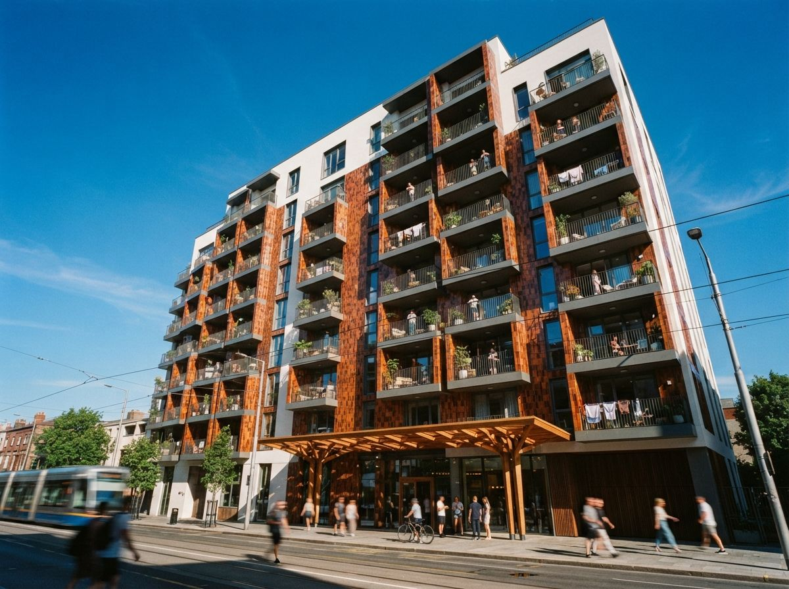
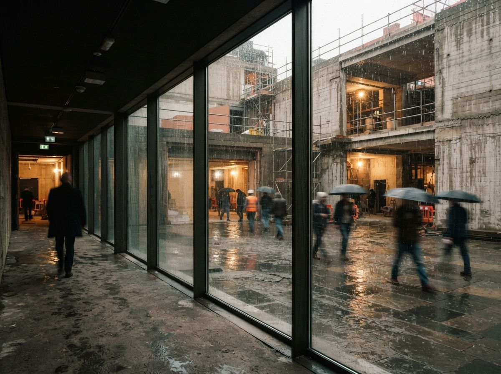

Rendering owns the AI conversation in architecture for a simple reason: it demos in thirty seconds and the output is a picture anyone can judge. Drafting is the opposite. The output is hundreds of interdependent sheets that only a professional can evaluate, produced over months, wrong in ways that surface a year later on site. So the tool lists, the ones we audit regularly, handle it with a category label and a hopeful sentence. But documentation is commonly the largest single phase of an architect's fee. If AI actually moved the needle there, it would matter more than every render tool on the list combined. So it is worth being precise about what exists.

Four products wearing one label
Read past any "AI drafting" claim and you find one of four things underneath.
1. Annotation and sheet automation inside BIM
Tagging, dimensioning, view creation, sheet setup, naming standards, the mechanical crust on top of a model that eats junior hours by the hundred. This is the most real category in 2026 and the least glamorous. We reviewed ArchiLabs doing exactly this work inside Revit, and the honest summary holds: it automates the part of documentation that a checker can verify at a glance, which is precisely why it works. A wrong door tag announces itself. Nothing here draws a detail, and the vendors, to their credit, mostly do not pretend otherwise.
2. The full-set service
A second group sells documentation as an outcome rather than a tool: send the model and the requirements, receive a coordinated set, with automation doing the bulk work and humans doing the judgment. This model can genuinely compress schedules, but read the fine print on building type. It thrives on repeatable typologies, multifamily floors, fit-outs, the projects where sheet forty resembles sheet twelve. Hand it a bespoke cultural building and the automation share drops toward zero while the human share, and the price, climbs back to what documentation always cost.
3. The model-first platforms
Tools like Snaptrude and the design-to-BIM crowd promise documentation as a byproduct: keep the model disciplined from day one and the drawings fall out of it. There is truth here, but it is the oldest truth in BIM wearing a new badge. Drawings fall out of a disciplined model in Revit too; the discipline was always the expensive part. The AI contribution is real but upstream, in getting a usable model faster. The sheets at the end are only as good as the modeling habits, which are still yours.
4. The CAD assistants
Autocomplete for drafting: block suggestions, markup conversion, drawing cleanup, the small ML features that have been quietly accumulating inside mainstream CAD for years. Smallest claims, most shipped, and the category most likely to be running in your office already without anyone calling it AI.
The stamp changes the math
Here is why drafting is not rendering with different geometry. When a render invents a skyline in the glazing, you get an awkward client question, which is why we keep a hallucination QA checklist for images. When a drawing invents a flashing condition, you get a claim. Construction documents are instruments of service issued under a registration, and there is no version of "the AI drew it" that moves the liability anywhere but the stamp. Every vendor's terms of service agree on this point with remarkable unanimity.
That asymmetry sets the trust bar, and it also explains the shape of what works. The economics of any automation are the hours saved minus the hours spent checking. A generated door schedule is fast to verify, so the savings survive. A generated detail is slow to verify, slower in some offices than drawing it fresh, because checking someone else's technical reasoning is harder than doing your own. This is not a temporary limitation waiting on a better model. It is why the winning products all cluster in the checkable layer, and why "AI that drafts your details" remains a demo genre rather than a product category.
A wrong tag announces itself. A wrong detail waits for the rain.

The re-issue test
If a drafting tool makes it to a pilot, there is one honest way to run it. Take a project you already issued, feed the tool the same inputs your team had, and diff its output against the set you know is right, because you answered the RFIs on it. Count three things: what it got wrong that a glance catches, what it got wrong that only a senior catches, and how long the checking took. That last number is the one the demo never shows, and it is the number that decides whether the tool pays. Run the pilot the way we suggested for back-office AI generally: one project, one month, hours logged, no vibes.
Ask the vendor two questions while you are at it. Which building types does the automation percentage actually hold for, and can you speak to a firm that issued a permit set with it. The first answer is usually narrower than the marketing. The second is where the category's youth shows.
Our take: boring is the tell
The pattern across every category that AI has actually improved for architects is the same: the wins are boring. Denoise settings, tagging passes, schedule checks, sheet setup. The demos that look like magic, a wall section assembling itself, a permit set from a prompt, are consistently the ones that do not survive contact with a real project. So when a tool list puts "2D drafting" between rendering and site analysis as if the categories were equally solved, that is not information, it is optimism with a thumbnail.
But do not let the skepticism curdle into dismissal. Documentation is the largest pile of hours in the building, and the checkable layer of it, plausibly a third of those hours in a standards-heavy office, is automating right now, quietly, while everyone watches the render tools. The firms that will feel this first are not buying a magic drafter. They are shaving the crust off CD phase one unglamorous automation at a time, and rebidding their fees before their competitors notice what happened.
The render was never the deliverable. The set is. Point the machine at the set, and keep your hand on the pen that matters.
Drawn from this week's intel sweep, where "2D drafting" appeared as a category in the circulating ten-tools video and the 30-plus tool guides alongside rendering and site analysis, plus prior ArchiGen reviews of Revit and BIM automation tools. Vendor capabilities and building-type coverage change quickly in this category; the checkable-layer economics are the durable part. No affiliate relationship with any tool named.